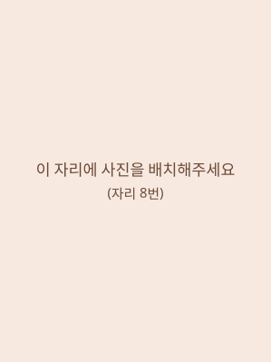
대표원장

EMS Guided Biofilm Therapy(GBT)는 예방·치료·유지관리를 위한 근거 기반의 모듈형 프로토콜입니다. 바이오필름을 먼저 제거한 뒤 치석을 제거하는 방식으로, 가장 덜 침습적이고 편안하게 진행하는 것을 목표로 합니다.
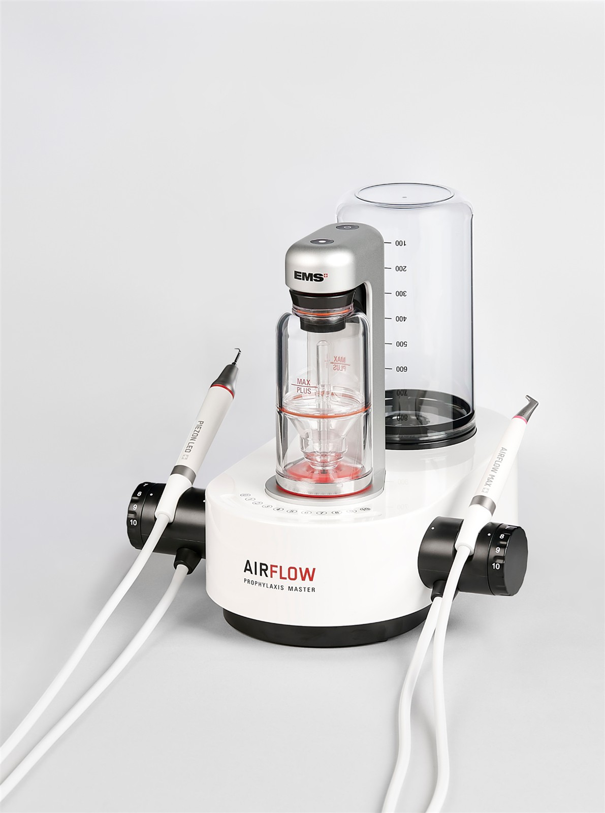
제품 설명은 EMS 공식 자료(ems-dental.com)를 바탕으로 정리했습니다. 개인차가 있을 수 있으니 진료 전에 자세히 설명드립니다.
전화로 예약 문의 · 02-725-9200치료 전에 진단 결과와 방법을 설명드리고, 필요한 진료만 권해 드립니다.
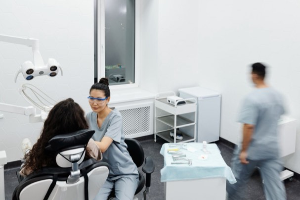
빠진 치아 자리에 인공 치근을 심어 씹는 기능을 회복하는 치료입니다.
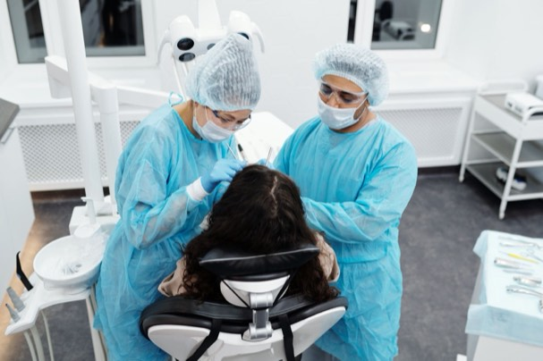
고르지 않은 치열을 단계별 계획에 따라 천천히 맞춥니다.
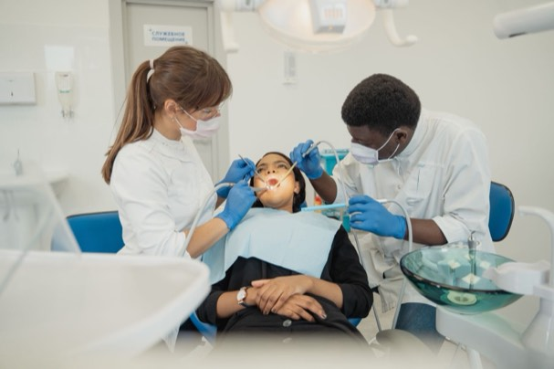
충치의 깊이를 확인하고 치아를 가능한 한 보존하는 방향으로 치료합니다.
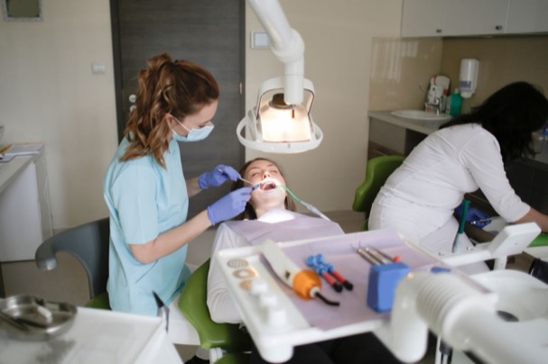
치석과 잇몸 염증을 관리해 잇몸 건강을 유지하도록 돕습니다.
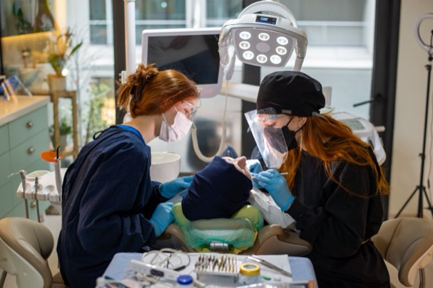
치아 색과 모양을 자연스럽게 다듬는 치료를 상담 후 진행합니다.
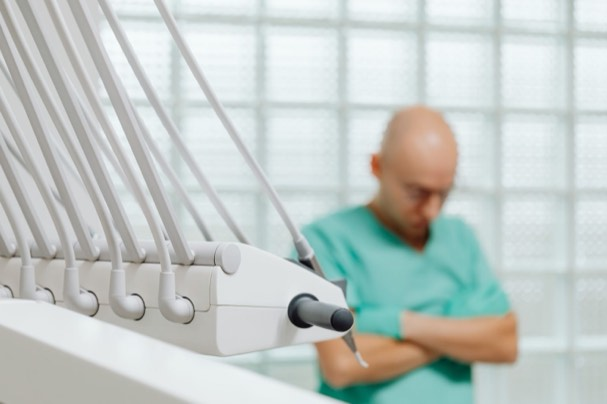
아이가 낯선 진료실에 익숙해질 수 있도록 설명하며 진료합니다.
진단 결과와 치료 방법, 순서를 진료 전에 말씀드립니다.
지금 필요하지 않은 치료는 권하지 않습니다.
처음 상담한 원장이 치료가 끝날 때까지 맡습니다.
설명을 먼저 드리고, 필요한 치료만 권하는 것을 진료의 기본으로 삼고 있습니다.

대표원장
원장
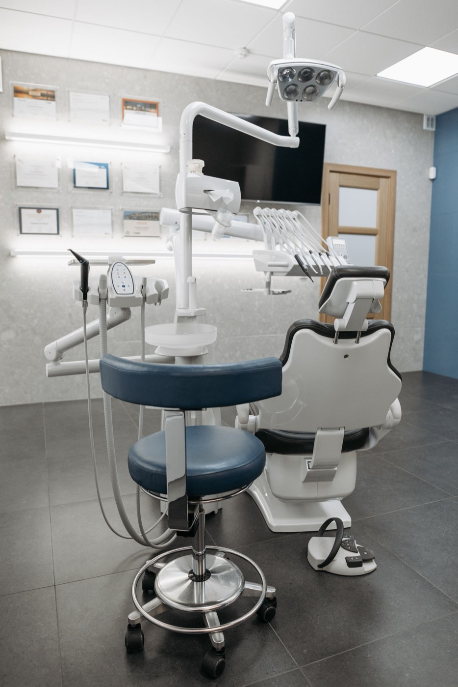
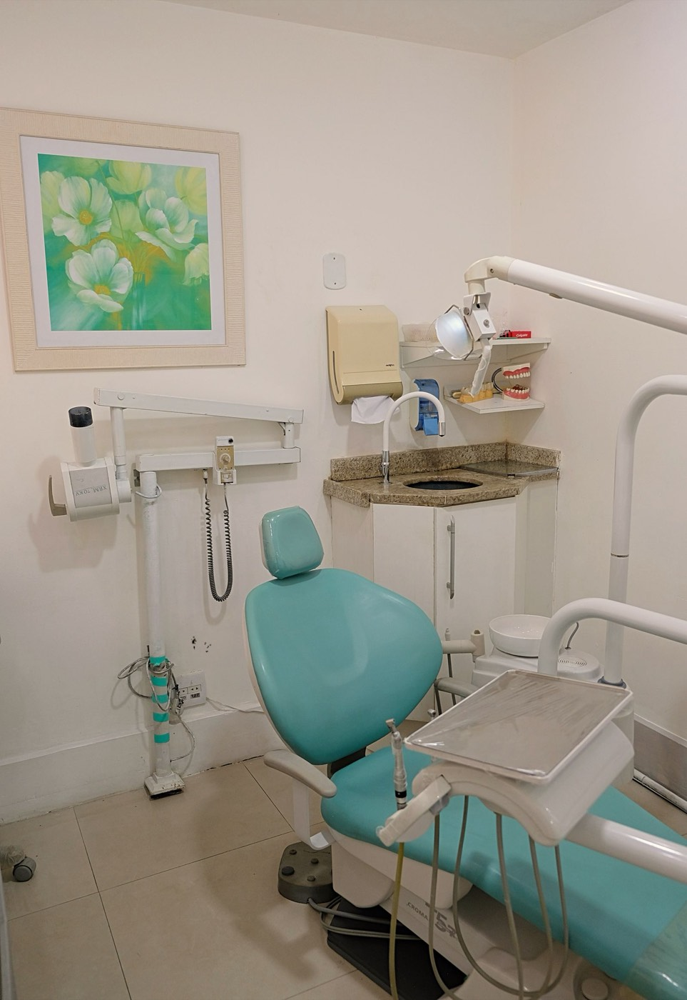
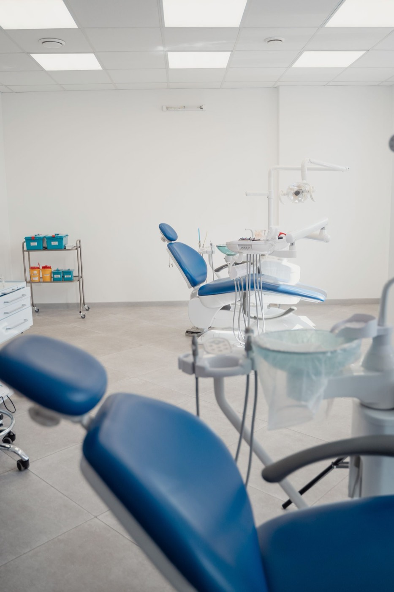
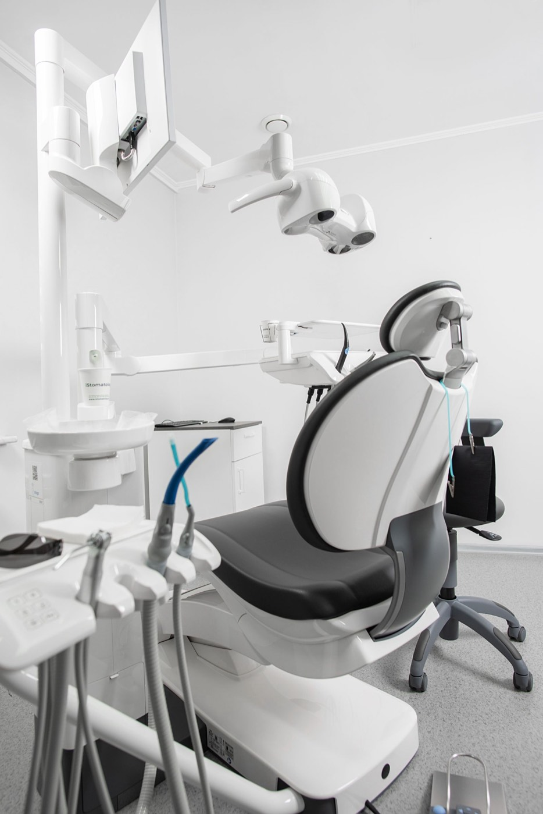
서울특별시 종로구 관철동 11-3 동흥빌딩, 3~4층
전화 문의
02-725-9200